Handling Missing Data in Pandas
Detect, measure, and handle missing values like a senior data scientist: master NaN, None, and NaT representations, leverage isna() and notna(), prune with dropna(), impute strategically using fillna() with mean vs median, apply time-series forward fill (ffill) and linear interpolation, and avoid statistical bias.
1. Introduction: Why is Data Missing?
Real-world data science aur machine learning mein "Clean, Complete Data" ek myth hai. Kisi bhi company, hospital, university, ya IoT sensor network mein jab aap pehli baar raw dataset open karenge, toh aapko empty cells, blanks, aur null markers zaroor milenge.
Imagine kijiye do relatable situations:
- College Examination Database: Kuch students ne exam ke din medical leave li thi, isliye unke marks blank hain. Kuch students ne admission form mein optional "Department Specialization" select nahi kiya tha. Aur ek clerk attendance sheet enter karte waqt do rows bhool gaya.
- Weather IoT Station: Ek automated weather sensor har 15 minute mein temperature aur humidity broadcast karta hai. Subah 8:15 AM par battery voltage dip hui aur Wi-Fi packet drop ho gaya, jisse 08:15 AM ki reading record nahi ho payi.
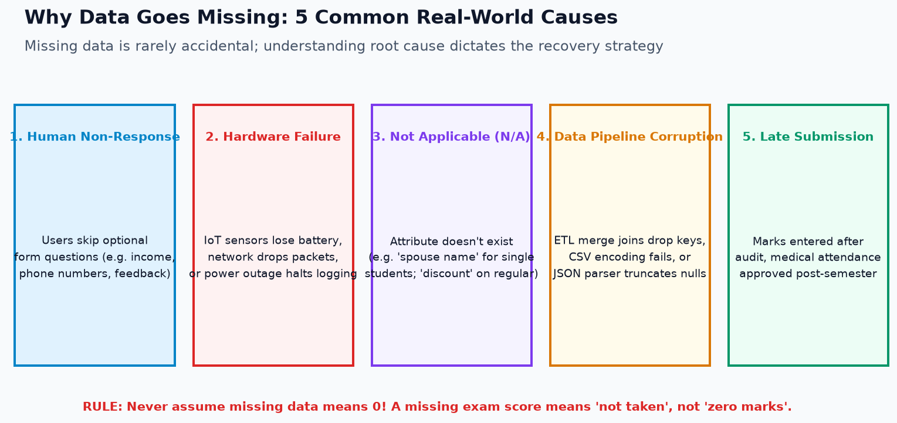
Beginners ki sabse badi galti hoti hai missing value ko chupke se 0 maan lena. Agar student ke exam marks missing hain, toh iska matlab yeh nahi hai ki usne 0 marks score kiye! Uska exam absent tha ya paper checking pending hai. Agar aapne use 0 bana diya, toh class ka average score artificially crash ho jayega aur innocent student fail ho jayega.
Why Missing Data Must Be Handled Carefully
Missing data ko ignore ya galat tareeqe se handle karne par 4 major disasters hote hain:
- Biased Metrics: Averages, standard deviations, aur correlation coefficients distort ho jaate hain.
- Machine Learning Crashes: Scikit-Learn ke algorithms (jaise Linear Regression, Logistic Regression, Random Forests, SVMs)
NaNvalues encounter karte hiValueError: Input contains NaNraise karke training crash kar dete hain. - Distorted Visualizations: Matplotlib aur Seaborn charts mein breaks, gaps, ya misleading dropoffs aate hain.
- Severe Information Loss: Agar aap bina soche samjhe sabhi incomplete rows ko delete (
dropna) kar denge, toh aap apne dataset ka 50% ya 70% useful data gawa sakte hain!
2. Understanding NaN, None, and NaT
Python aur Pandas mein missing data ek single format mein nahi hota. Data type (numerical, categorical, datetime) ke hisaab se Pandas 3 alag-alag null representations use karta hai:
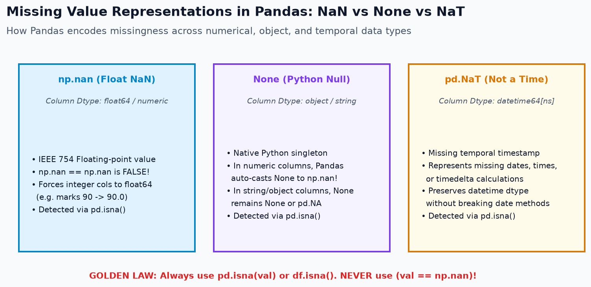
1. np.nan (Not-a-Number) for Numerical Columns
Numerical columns (integers aur floats) mein missing value ko standard IEEE 754 floating-point NaN (Not-a-Number) se represent kiya jata hai.
Ek bohot zaroori side-effect: Jab kisi standard integer column mein NaN aata hai, toh Pandas use automatically float64 mein promote kar deta hai! (Example: 92 ban jata hai 92.0).
The Fatal Trap: np.nan == np.nan is FALSE!
Computer science ke IEEE 754 floating-point standard ke anusaar, NaN kisi bhi cheez ke barabar nahi hota, yahan tak ki khud apne aap ke barabar bhi nahi!
import numpy as np x = np.nan print("Is x equal to np.nan?", x == np.nan) # Evaluates to False! print("Is x not equal to x?", x != x) # Evaluates to True!
Agar aap likhenge df[df['marks'] == np.nan], toh aapko 0 rows milengi, chahe table mein 1,000 missing values kyun na ho! Missing values detect karne ke liye hamesha df['marks'].isna() ya pd.isna() use karein.
2. None (Python Singleton) in Object/String Columns
Python ka built-in None object-dtype (strings, text, categories) columns mein null marker ki tarah use hota hai. Agar aap kisi numeric series mein None pass karenge, toh Pandas use automatically np.nan mein cast kar deta hai.
3. pd.NaT (Not-a-Time) in Datetime Columns
Date, time, aur timestamp columns mein missing value ko pd.NaT (Not-a-Time) represent karta hai. Yeh datetime arithmetic aur formatting methods (jaise .dt.year, .dt.month_name()) ko crash hone se bachata hai.
Example 1: Inspecting Numerical and Text Missing Values
import numpy as np import pandas as pd df_demo = pd.DataFrame({ 'student_id': ['STU-101', 'STU-102', 'STU-103'], 'marks': [92.0, np.nan, 86.0], 'department': ['CS', None, 'ECE'] }) print(df_demo) print(" Column Data Types:") print(df_demo.dtypes)
Example 2: Datetime Column with NaT Detection
import pandas as pd df_dates = pd.DataFrame({ 'event': ['Orientation', 'Midterm Exam', 'Final Exam'], 'scheduled_date': pd.to_datetime(['2026-08-01', None, '2026-12-15']) }) print(df_dates) print(" Is scheduled_date missing?") print(df_dates['scheduled_date'].isna())
3. Detecting Missing Values (isna, notna, isnull, notnull)
Pandas hume missing values detect karne ke liye 4 standard methods deta hai. In methods ka kaam pure table ya selected column par boolean mask (True / False) generate karna hota hai.
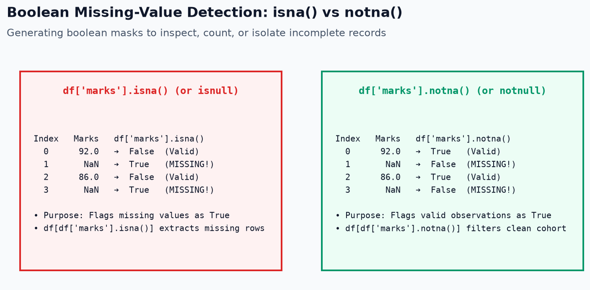
Understanding the Aliases
df.isna()aurdf.isnull()100% identical aliases hain. Dono exactly same code execute karte hain.isna()modern community standard hai kyunki yehnp.nanke sath visually align hota hai.df.notna()aurdf.notnull()bhi 100% identical aliases hain. Yehisna()ka opposite (inversion) return karte hain.
Example 1: Identifying Students with Missing Examination Records
Student dataset mein se un students ko filter karke nikalna jinka marks ya attendance missing hai:
import numpy as np import pandas as pd df_students = pd.DataFrame({ 'student_id': ['STU-101', 'STU-102', 'STU-103', 'STU-104'], 'name': ['Aarav', 'Diya', 'Kabir', 'Meera'], 'marks': [92.0, np.nan, 86.0, 74.0], 'attendance': [88.0, 94.0, 82.0, np.nan] }) # Filter students who have ANY missing field has_missing = df_students['marks'].isna() | df_students['attendance'].isna() print("--- Students Requiring Examination Audit ---") print(df_students[has_missing])
Example 2: Finding E-Commerce Orders with Missing Prices
Online store mein pending transactions filter karna jinme unit price enter nahi hui:
import numpy as np import pandas as pd df_orders = pd.DataFrame({ 'order_id': ['ORD-01', 'ORD-02', 'ORD-03'], 'item': ['Keyboard', 'Custom Prototype', 'Monitor'], 'unit_price': [4299.0, np.nan, 21999.0] }) missing_price_orders = df_orders[df_orders['unit_price'].isna()] print(missing_price_orders[['order_id', 'item']])
4. Counting & Measuring Missing Data
Bade datasets mein hazaron rows hoti hain, isliye visually dekhna possible nahi hota. Data analysts hamesha quantitative missingness audit karte hain count aur percentage metrics ke zariye.
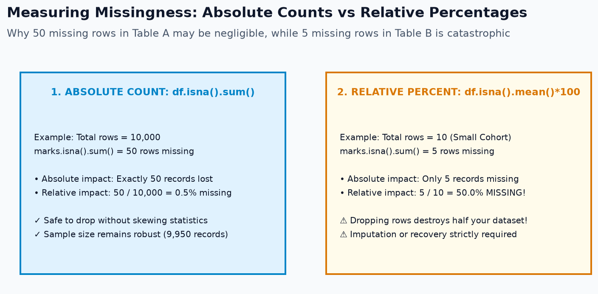
Essential Missingness Metrics
df.isna().sum(): Har column mein kitne missing cells hain (axis=0 aggregation).df.isna().sum().sum(): Pure DataFrame mein kul milakar kitne missing cells hain (single scalar integer).df.isna().mean() * 100: Har column ki missingness percentage.df.isna().any(): Boolean check batane ke liye ki kya kisi column mein kam se kam ek missing value hai.
Example 1: Generating a Missingness Summary Table
Ek complete production-grade missingness report create karna jo count aur percentage dono bataye:
import numpy as np import pandas as pd df_audit = pd.DataFrame({ 'student_id': ['S1', 'S2', 'S3', 'S4', 'S5'], 'marks': [88.0, np.nan, 92.0, np.nan, 75.0], 'attendance': [90.0, 85.0, np.nan, 95.0, 80.0], 'dept': ['CS', 'IT', None, 'CS', 'ECE'] }) counts = df_audit.isna().sum() percentages = (df_audit.isna().mean() * 100.0).round(1) report = pd.DataFrame({ 'Missing Count': counts, 'Missing Percentage (%)': percentages }) print(report) print(" Total Missing Cells in Entire Table:", df_audit.isna().sum().sum())
5. Visualizing Missing Data Patterns
Numbers aur tables ke mukable charts hume turant dikha dete hain ki kya missing values kisi particular column mein clustered hain, ya pure dataset mein randomly scattered hain.
1. Missing Value Counts by Feature
Is bar chart se pata chalta hai ki kis column mein kitne records missing hain:
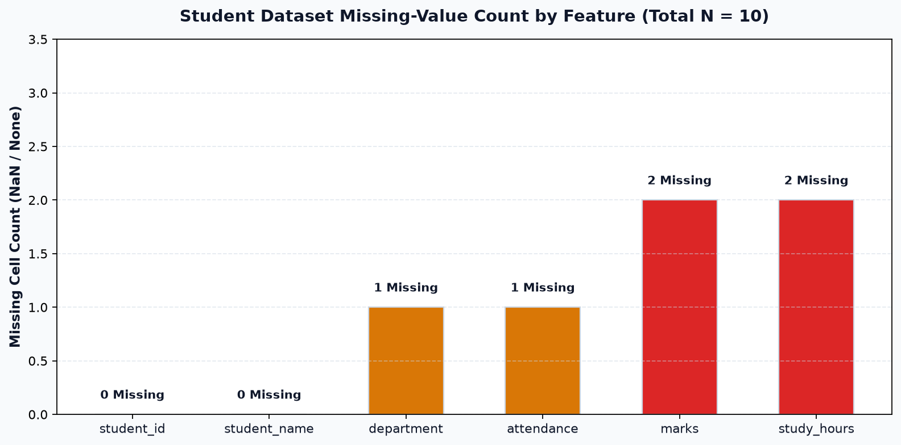
2. Missingness Percentage vs Action Thresholds
Engineering decision cutoffs: 20% se kam missing hone par statistical imputation safe hoti hai, jabki 50% se zyada missing hone par us feature ko drop karna better hota hai:
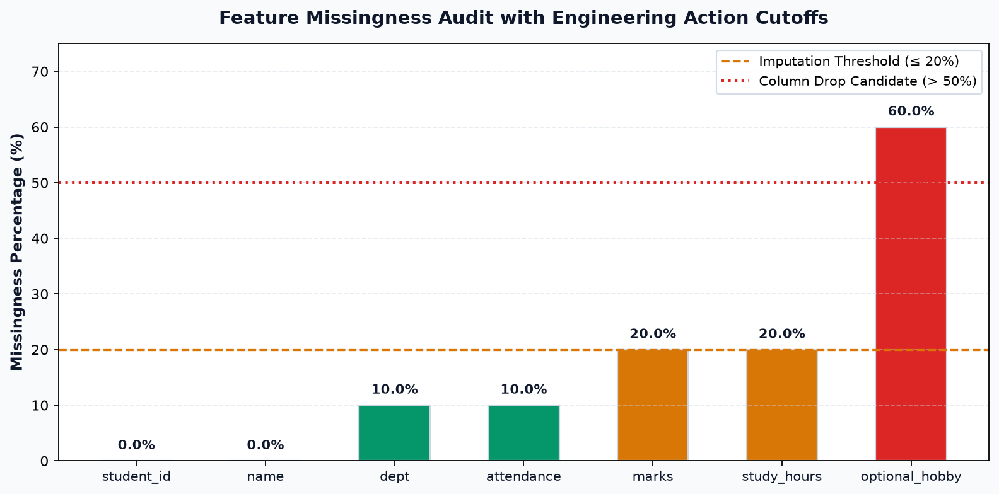
3. The Missingness Matrix Heatmap
Missingness matrix har student row (index) aur har feature column (x-axis) ka intersection grid dikhati hai. Rose color missing cell represent karta hai:
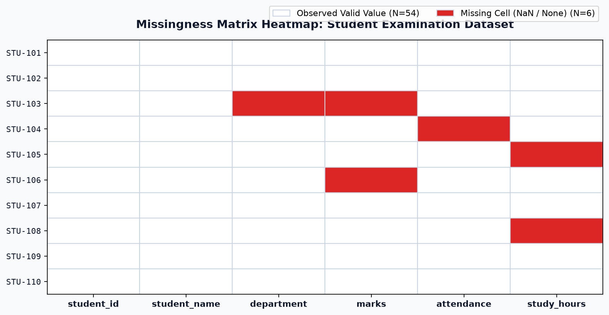
6. Removing Missing Data with dropna()
Missing data handle karne ki pehli basic strategy hoti hai: Deletion (dropna). Agar koi row ya column incomplete hai, toh use table se discard kar dena. Lekin yeh decision bohot thoughtfully lena chahiye kyunki deletion irreversible data loss karta hai.
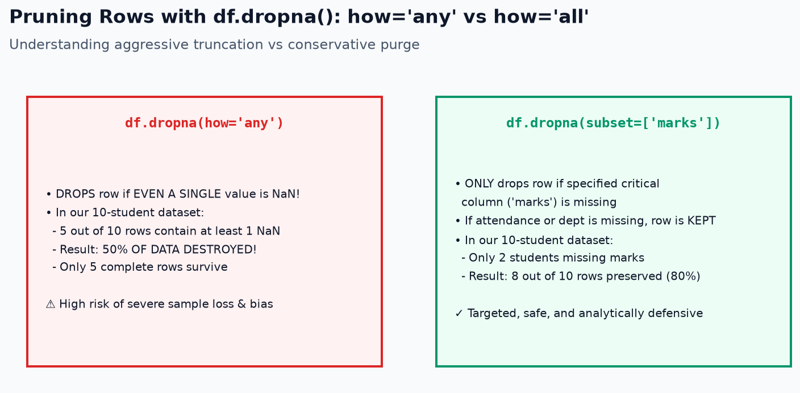
Core Parameters of dropna()
how='any'(Default): Agar row ke kisi bhi ek column meinNaNmil gaya, toh puri row delete ho jaati hai.how='all': Row tabhi delete hoti hai jab uske saare ke saare columnsNaNhon.subset=['col1', 'col2']: Sirf specified columns ko check karta hai. Baaki columns keNaNignore karta hai.axis=1: Rows ke bajaye un columns ko drop karta hai jinme missing values hain.thresh=k: Un rows ko retain karta hai jinme kam se kamknon-null valid values maujood hon.
Example 1: Measuring Row Loss and Data Retention Rate
dropna() chalane se pehle aur baad mein hamesha row count check karna chahiye:
import numpy as np import pandas as pd df_students = pd.DataFrame({ 'name': ['Aarav', 'Diya', 'Kabir', 'Meera', 'Rohan'], 'marks': [92.0, np.nan, 86.0, 74.0, 91.0], 'attendance': [88.0, 94.0, 82.0, np.nan, 96.0] }) initial_rows = len(df_students) # Approach A: Aggressive dropna (how='any') df_dropped_any = df_students.dropna(how='any') retained_rows = len(df_dropped_any) retention_pct = (retained_rows / initial_rows) * 100.0 print(f"Initial Rows: {initial_rows} | Retained: {retained_rows} ({retention_pct:.1f}%)") print(f"Rows Lost: {initial_rows - retained_rows} rows dropped.") print(df_dropped_any)
Example 2: Targeted Deletion with subset=['marks']
Agar hume sirf un students ke exam scores par report banani hai jinhone exam appear kiya tha, toh hum attendance ke missing hone par unhe drop nahi karenge:
import pandas as pd # Only drop rows where 'marks' is NaN; keep Meera even though attendance is NaN df_exam_cohort = df_students.dropna(subset=['marks']) print("Retained Cohort Count:", len(df_exam_cohort)) print(df_exam_cohort)
7. Filling Missing Values with fillna()
Data ko drop karne ke bajaye hum missing cells mein suitable placeholders ya fallback values inject kar sakte hain taaki row retain ho sake aur downstream algorithms crash na hon. Is process ko Imputation kehte hain.
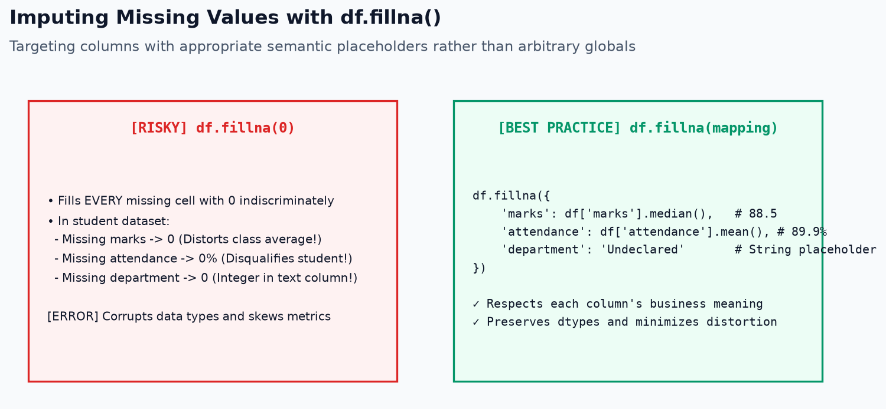
The Danger of Global fillna(0)
Aksar beginners likhte hain: df.fillna(0, inplace=True). Yeh ek dangerous shortcut hai!
Agar aapke dataset mein department column hai (string dtype), toh 0 number us string column ke andar enter ho jayega, jisse column mixed type ka ho jayega aur string methods (jaise .str.upper()) crash kar denge!
Production Best Practice: Per-Column Dictionary Mapping
Har feature ke business meaning ke hisaab se specific values define karein:
import numpy as pd df_students = pd.DataFrame({ 'name': ['Aarav', 'Diya', 'Kabir'], 'marks': [92.0, np.nan, 86.0], 'department': ['CS', None, 'ECE'] }) # Targeted mapping dictionary fill_strategy = { 'marks': 0.0, # Explicit fallback for missing exam 'department': 'Undeclared' # Clean string placeholder } df_imputed = df_students.fillna(fill_strategy) print(df_imputed)
8. Filling Numerical Missing Values using Statistics
Arbitrary 0 ya placeholder bharne ke bajaye data science mein Central Tendency Measures (Mean, Median, Mode) se missing values ko impute kiya jata hai taaki dataset ka overall statistical distribution disturb na ho.
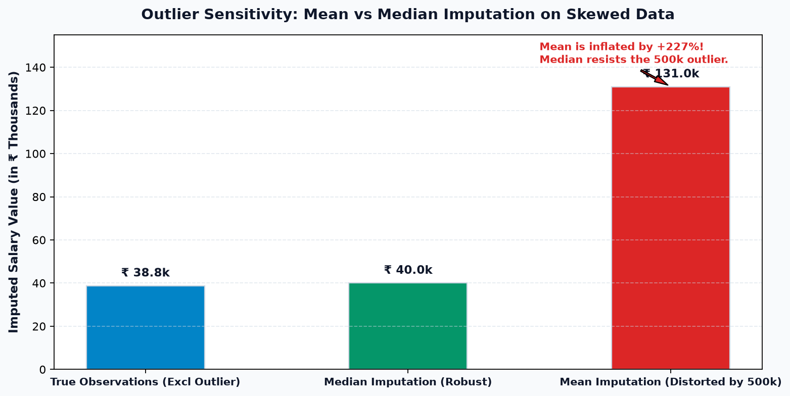
When to Use Mean vs Median vs Mode
| Metric | Python Syntax | Best Used For | Major Risk / Limitation |
|---|---|---|---|
| Mean (Average) | df['col'].fillna(df['col'].mean()) |
Symmetric, bell-shaped normal distributions without outliers | Extreme high/low values heavily pull and distort the mean |
| Median (50th %ile) | df['col'].fillna(df['col'].median()) |
Skewed numerical data (income, housing prices, marks with outliers) | Ignores actual magnitudes of extreme observations |
| Mode (Most Frequent) | df['col'].fillna(df['col'].mode()[0]) |
Categorical strings or discrete counts (departments, city, ratings) | Can over-represent dominant category if missingness is high |
Example 1: Demonstrating Outlier Resistance in Student Scores
5 students ke marks hain, jisme ek data entry error se 999 likh gaya. Dekhiye Mean aur Median kaise behave karte hain:
import numpy as np import pandas as pd scores_series = pd.Series([80.0, 85.0, 82.0, np.nan, 999.0]) # 999 is typo mean_val = scores_series.mean() # (80+85+82+999)/4 = 311.5 median_val = scores_series.median() # Median of [80, 82, 85, 999] = (82+85)/2 = 83.5 print(f"Calculated Mean: {mean_val:.1f} (Completely absurd for 100-mark exam!)") print(f"Calculated Median: {median_val:.1f} (Accurate reflection of student ability)") scores_imputed_median = scores_series.fillna(median_val) print(" Imputed Series with Median:") print(scores_imputed_median)
9. Forward Fill and Backward Fill (ffill & bfill)
Time-series data, financial stock prices, aur IoT sensor telemetry mein physical measurements continuous hoti hain. Subah 8:15 AM par temperature kal ke average jitna nahi hota, balki subah 8:00 AM wale temperature ke bohot kareeb hota hai!
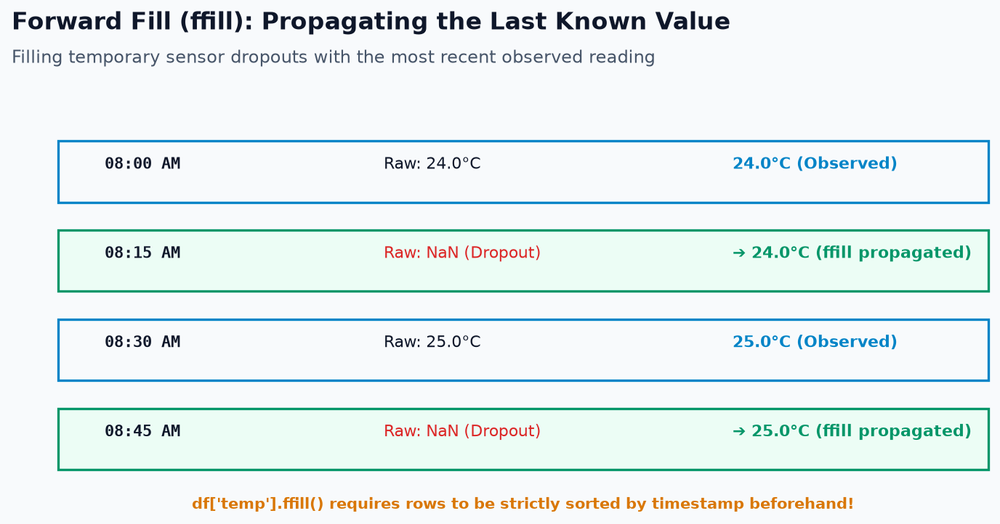
How ffill() and bfill() Work
ffill()(Forward Fill): Kisi missing value ki jagah previous available valid observation ko copy karta hai.bfill()(Backward Fill): Kisi missing value ki jagah next available future observation ko back-propagate karta hai.
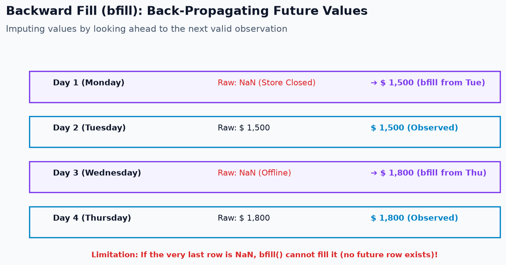
Agar aapke dataset mein multiple sensors ya alag-alag students hain, toh global ffill() kabhi mat lagaiye! Sensor A ki aakhri reading agle sensor (Sensor B) ki pehli reading mein leak (bleed) ho sakti hai! Multi-entity datasets mein hamesha groupby('sensor_id').ffill() use karein.
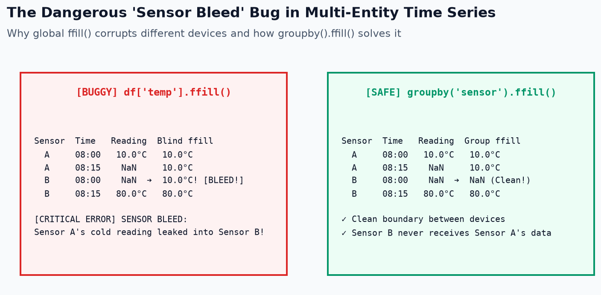
Example 1: Time-Series Temperature Sensor Reading with ffill
import numpy as np import pandas as pd df_telemetry = pd.DataFrame({ 'timestamp': ['08:00', '08:15', '08:30', '08:45'], 'temperature': [24.0, np.nan, 25.0, np.nan] }) # Propagate last known reading forward df_telemetry['temp_ffill'] = df_telemetry['temperature'].ffill() print(df_telemetry)
10. Numerical Linear Interpolation
Jab hum temperature, vehicle speed, electricity consumption, ya heart rate jaisi continuous physical phenomena ko track karte hain, toh ffill() sirf step-like flat lines banata hai. Lekin real world mein physical properties smooth slope ke sath evolve hoti hain!
Pandas hume interpolate(method='linear') provide karta hai jo do known points ke beech ka mathematical slope calculate karke missing intermediate values ko estimate karta hai.
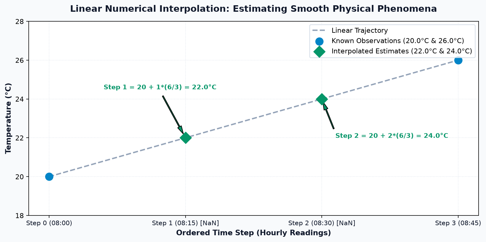
The Mathematical Logic of Linear Interpolation
Agar step 0 par reading 20.0°C thi aur step 3 par reading 26.0°C hai (beech ke steps 1 aur 2 missing hain):
- Total temperature change: \(26.0 - 20.0 = 6.0^\circ ext{C}\) across 3 steps.
- Step increment: \(6.0 / 3 = 2.0^\circ ext{C}\) per step.
- Step 1 (Missing): \(20.0 + 2.0 = \mathbf{22.0^\circ ext{C}}\)
- Step 2 (Missing): \(22.0 + 2.0 = \mathbf{24.0^\circ ext{C}}\)
Interpolation sirf tabhi valid hota hai jab data mathematically continuous aur chronologically ordered ho. Student names, department codes, ya zip codes ko linear interpolate karne ki koshish bilkul meaningless aur invalid hoti hai!
Example 1: Smooth Temperature Reconstruction
import numpy as np import pandas as pd s_sensor = pd.Series([20.0, np.nan, np.nan, 26.0]) # Linear interpolation estimates values at constant slope s_reconstructed = s_sensor.interpolate(method='linear') print("Raw with NaNs:", list(s_sensor)) print("Interpolated: ", list(s_reconstructed))
11. Choosing the Right Missing-Data Strategy
Data science interviews aur enterprise analytics teams mein sabse critical skill hoti hai: "How do you choose between dropping and imputing?" Koi bhi ek strategy har situation ke liye perfect nahi hoti.
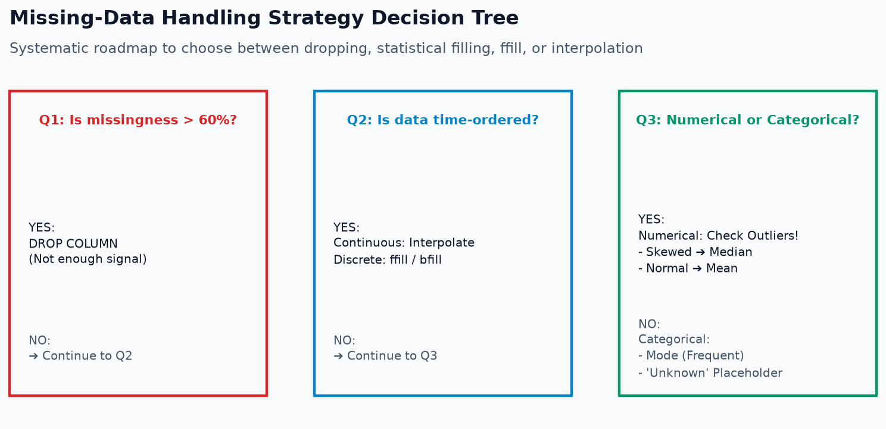
The 6 Diagnostic Questions Every Data Scientist Must Ask
- Why is the value missing? Kya system crash hua tha (MCAR), ya user ne janboojhkar income hide ki hai (MNAR)?
- Is the column essential to our goal? Agar hum exam marks analyze kar rahe hain aur student ka hobby missing hai, toh hobby column ko simply ignore ya drop kiya ja sakta hai.
- What is the percentage of missingness?
< 5%: Deletion ya simple statistical imputation safe hoti hai.5% - 25%: Median/Mean ya model-based imputation required hoti hai.> 50%: Feature mein statistical signal bohot kam hai; column drop karna behtar option ho sakta hai.
- Is the data numerical, categorical, or temporal? Numbers ke liye median/mean/interpolation; categories ke liye mode ya
'Unknown'placeholder. - Are there extreme outliers in the column? Skewed data mein Mean hamesha distort hota hai, isliye Median use karein.
- Can the value be verified from another reliable source? Automated imputation se pehle database audit log check karna hamesha best practice hai.
Missing-Data Strategy Comparison Matrix
| Strategy | Recommended Scenario | Key Advantages | Primary Risks |
|---|---|---|---|
| Drop Rows (dropna) | Missingness < 5%, MCAR pattern, massive sample size | Zero artificial assumptions; pure observed data | Sample size shrinkage; introduces bias if not MCAR |
| Drop Column | Missingness > 50% and column is non-critical | Eliminates high-noise feature completely | Permanent loss of potential feature signal |
| Constant Fill (0 / 'Unknown') | Missingness has explicit business meaning (e.g. 0 discount) | Deterministic, simple, avoids crashing algorithms | Can distort statistical distributions and averages |
| Mean Imputation | Normally distributed numerical data without outliers | Preserves the sample mean exactly | Underestimates sample variance; vulnerable to outliers |
| Median Imputation | Skewed numerical data (income, housing, ratings) | Highly robust to extreme outliers | Can create artificial spikes at the median value |
| Mode Imputation | Categorical features with a clear dominant class | Natural categorical replacement | Inflates majority class frequency |
| Forward / Backward Fill | Ordered time-series, sensor telemetry, daily stock logs | Preserves temporal continuity and states | Sensor Bleed if entities aren't isolated with groupby |
| Linear Interpolation | Continuous physical measurements (temp, speed, pressure) | Reconstructs realistic gradual transitions | Only valid for ordered numerical measurements |
12. Understanding Missingness Patterns (MCAR, MAR, MNAR)
Statistics aur advanced data science mein missing data ko unke underlying generation mechanism ke hisaab se 3 theoretical categories mein classify kiya jata hai:
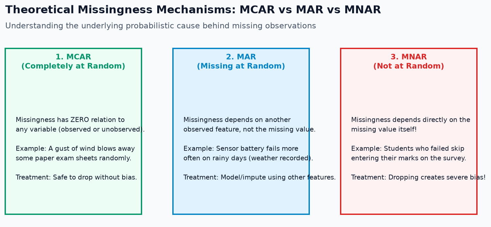
1. MCAR (Missing Completely at Random)
Missing hone ka kisi bhi variable (observed ya unobserved) se koi relation nahi hota.
Relatable Example: Exam hall ki window khuli thi aur hawa ke jhoke se kuch papers udkar kho gaye. Har student ka paper khone ka chance bilkul barabar tha, regardless of unke marks kya the.
Impact: Sample size kam hota hai, lekin sample ka distribution un-skewed rehta hai. dropna() is completely safe here.
2. MAR (Missing at Random)
Missingness kisi dusre observed variable par depend karti hai, lekin khud us missing value par nahi.
Relatable Example: IoT sensors barish ke dino mein battery drain hone ki wajah se zyada fail hote hain. Barish humne weather='Rainy' column mein record ki hui hai. Toh temperature ka missing hona weather feature se explain ho sakta hai.
Impact: Agar hum weather column ko conditioning variable ki tarah use karein (e.g. rainy days ke liye alag imputation), toh bias eliminate ho jata hai.
3. MNAR (Missing Not at Random)
Missing hone ka reason seedhe usi missing value par depend karta hai jo hum jan-na chahte hain!
Relatable Example: Jin students ke marks bohot kam aaye the, unhone voluntary feedback survey mein apna marks column blank chhod diya.
Impact: Agar aap in missing rows ko delete kar denge, toh class ka average score unrealistically high dikhega (survivorship bias)! MNAR data ko handle karne ke liye domain expertise aur explicit missingness flags require hote hain.
13. Common Mistakes & Sensor Bleed Debugging
Missing data handle karte waqt production pipelines mein aane wale top 10 pitfalls:
Top 10 Beginner Pitfalls
- Blind Zero-Fill:
df.fillna(0)likhkar missing test marks ya temperatures ko zero bana dena, jo metrics ko completely corrupt karta hai. - Global fillna() Across Mixed Dtypes: String columns mein number
0inject karkeAttributeErrortrigger karwana. - Dropping Rows Without Measuring Retention:
dropna()call karke bina dekhe 60% sample size delete kar dena. - Using ffill() on Unsorted Data: Time-series dataset ko pehle
sort_values('timestamp')kiye bina ffill chalana. - The Sensor Bleed Bug: Multiple devices ya customers ke dataset par global ffill chalakar Device A ki reading Device B mein leak kar dena.
- Interpolating Categorical Columns: Strings ya IDs par linear interpolation lagane ki koshish karna.
- The NaN Equality Trap:
df[df['col'] == np.nan]likhna jo hamesha 0 rows return karta hai. - Failure to Preserve Original Copy: Data modify karne se pehle
df_original = df.copy()na banana. - Empty Strings vs NaN: Text files mein blank spaces
""ya" "ko NaN na samajhna (Pandas mereplace('', np.nan)karna padta hai). - Unverified Recovery: Imputation ke baad
df.isna().sum().sum() == 0verify kiye bina dataset ko production mein deploy kar dena.
Debugging Walkthrough 1: Eliminating the Sensor Bleed Bug
import numpy as np import pandas as pd df_multi = pd.DataFrame({ 'sensor': ['A', 'A', 'B', 'B'], 'reading': [10.0, np.nan, np.nan, 80.0] }) # ❌ BUGGY GLOBAL FFILL (Sensor A's 10.0 leaks into Sensor B!): # df_multi['reading_corrupt'] = df_multi['reading'].ffill() # ✓ PRODUCTION BULLETPROOF FIX: Group-aware transformation df_multi['reading_clean'] = df_multi.groupby('sensor')['reading'].ffill() print(df_multi)
Debugging Walkthrough 2: Fixing the NaN Comparison Trap
import numpy as np import pandas as pd df = pd.DataFrame({'name': ['Aarav', 'Diya'], 'marks': [90.0, np.nan]}) # ❌ WRONG: df[df['marks'] == np.nan] # Returns EMPTY DataFrame (0 rows) # ✓ BULLETPROOF PRODUCTION FIX: missing_students = df[df['marks'].isna()] print("Successfully caught missing student:") print(missing_students)
14. Real-World Mini-Project 1: College Student Data Recovery
Is guided capstone mini-project mein hum University Examination Cell ke messy, incomplete semester records ko recover karenge. Pipeline original data ko preserve karegi, missingness audit karegi, numerical columns ke liye mean vs median compare karegi, categorical missingness ko placeholder se handle karegi, aur audit flags generate karke CSV verify karegi.
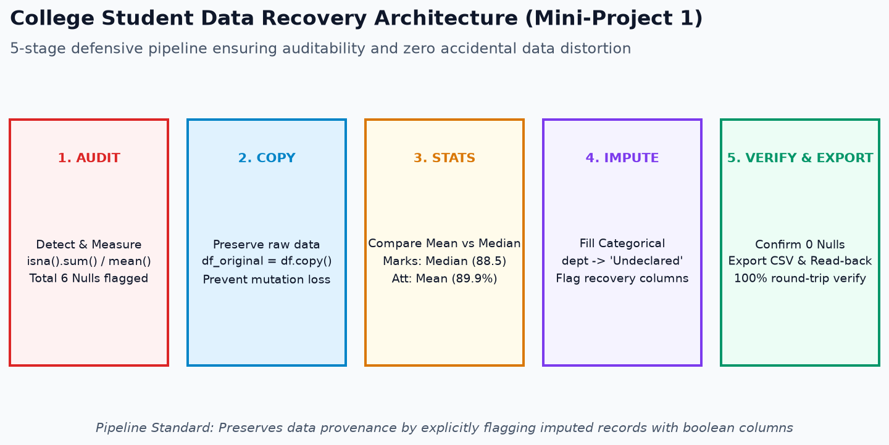
1. Missingness Audit Visuals
Pipeline execute karne par missingness rate aur before-after recovery stability charts:
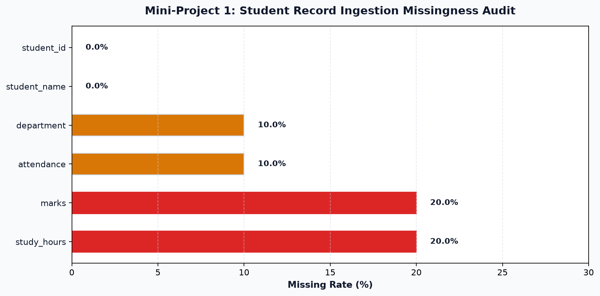
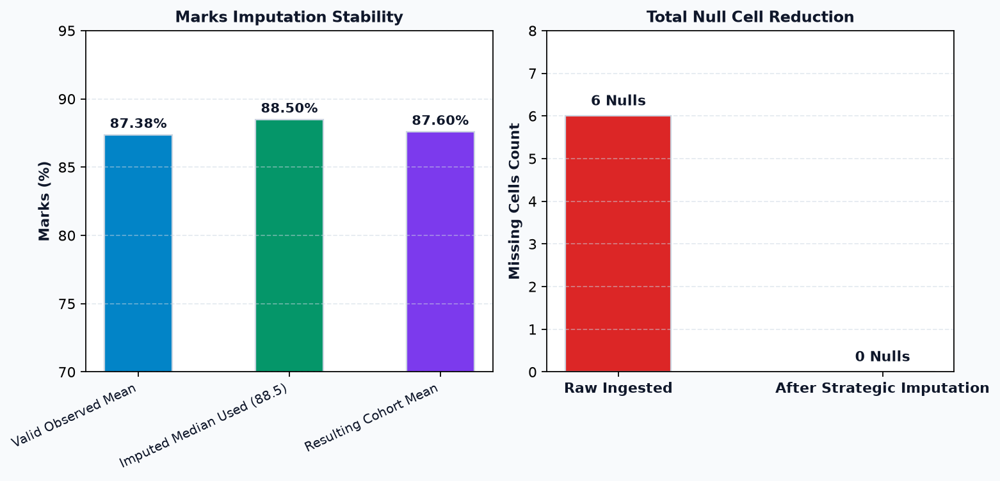
The Complete Executable 5-Stage Pipeline
import os import numpy as np import pandas as pd # ============================================================================== # STAGE 1: Ingest Raw Student Examination Records # ============================================================================== raw_students = { 'student_id': ['STU-101', 'STU-102', 'STU-103', 'STU-104', 'STU-105', 'STU-106', 'STU-107', 'STU-108', 'STU-109', 'STU-110'], 'student_name': ['Aarav Sharma', 'Diya Patel', 'Kabir Singh', 'Meera Nair', 'Rohan Verma', 'Sneha Kulkarni', 'Aditya Joshi', 'Pooja Reddy', 'Vikram Malhotra', 'Zoya Khan'], 'department': ['CS', 'IT', None, 'ECE', 'CS', 'IT', 'MECH', 'ECE', 'CS', 'CS'], 'marks': [92.0, 85.0, np.nan, 86.0, 91.0, np.nan, 72.0, 84.0, 95.0, 94.0], 'attendance': [88.0, 94.0, 82.0, np.nan, 96.0, 90.0, 76.0, 89.0, 95.0, 92.0], 'study_hours': [15.0, 12.0, 8.0, 14.0, np.nan, 11.0, 7.0, np.nan, 18.0, 16.0] } df_college_raw = pd.DataFrame(raw_students) # ============================================================================== # STAGE 2: Defensive Copy & Missingness Audit # ============================================================================== df_college = df_college_raw.copy() total_nulls_before = df_college.isna().sum().sum() print(f"Stage 2 Audit: {total_nulls_before} missing cells detected across table.") # ============================================================================== # STAGE 3: Statistical Comparison & Strategy Selection # ============================================================================== valid_marks = df_college['marks'].dropna() marks_median = valid_marks.median() # 88.5 marks_mean = valid_marks.mean() # 87.375 print(f"Marks Stats -> Mean: {marks_mean:.2f} | Median: {marks_median:.2f} (Using Median)") # ============================================================================== # STAGE 4: Impute Missing Data with Provenance Flags # ============================================================================== df_college['marks_imputed'] = df_college['marks'].isna() df_college['marks'] = df_college['marks'].fillna(marks_median) df_college['attendance'] = df_college['attendance'].fillna(df_college['attendance'].mean().round(1)) df_college['study_hours'] = df_college['study_hours'].fillna(df_college['study_hours'].median()) df_college['department'] = df_college['department'].fillna('Undeclared') # ============================================================================== # STAGE 5: 100% Verification, CSV Export & Read-Back # ============================================================================== assert df_college.isna().sum().sum() == 0, "Null values still remain!" csv_path = 'college_student_recovered.csv' df_college.to_csv(csv_path, index=False) df_verified = pd.read_csv(csv_path) assert df_verified.shape == (10, 7), "Dimension mismatch!" print(f"Recovery Complete! Exported {len(df_verified)} rows with 0 nulls.") print(df_verified[['student_id', 'student_name', 'department', 'marks', 'marks_imputed']])
15. Real-World Mini-Project 2: IoT Temperature Sensor Data
Industrial automation aur smart cities mein IoT sensors environment monitor karte hain. Packet drops aur battery dips continuous missing values cause karte hain. Is project mein hum chronologically ordered multi-sensor dataset ko reconstruct karenge bina cross-sensor data bleed ke.
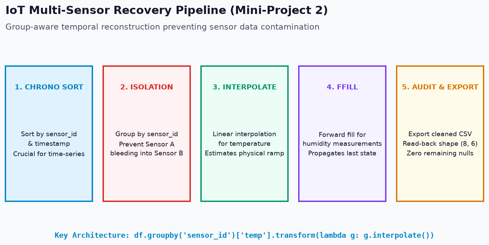
1. Time-Series Telemetry Visuals
Raw dropouts vs reconstructed continuous telemetry curves:
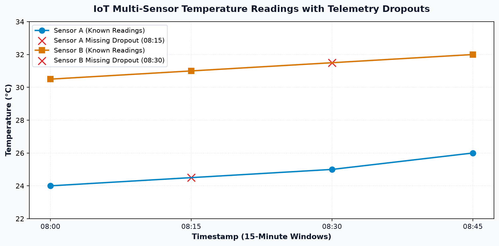
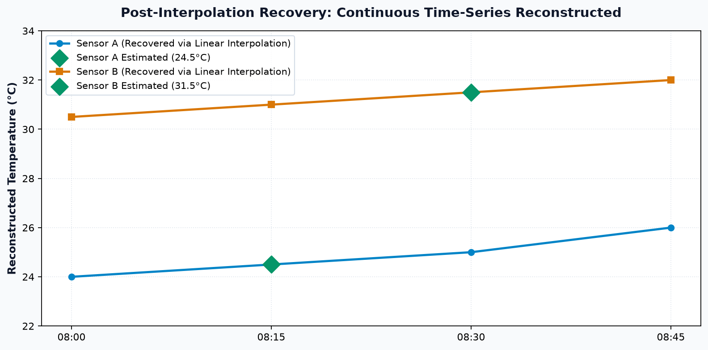
The Complete Executable Multi-Sensor Pipeline
import numpy as np import pandas as pd # ============================================================================== # STAGE 1: Ingest Raw Interleaved Sensor Readings # ============================================================================== raw_iot = { 'timestamp': pd.to_datetime([ '2026-10-28 08:00:00', '2026-10-28 08:15:00', '2026-10-28 08:30:00', '2026-10-28 08:45:00', '2026-10-28 08:00:00', '2026-10-28 08:15:00', '2026-10-28 08:30:00', '2026-10-28 08:45:00' ]), 'sensor_id': ['SENSOR-A', 'SENSOR-A', 'SENSOR-A', 'SENSOR-A', 'SENSOR-B', 'SENSOR-B', 'SENSOR-B', 'SENSOR-B'], 'temperature': [24.0, np.nan, 25.0, 26.0, 30.5, 31.0, np.nan, 32.0], 'humidity': [60.0, np.nan, np.nan, 58.0, 45.0, 46.0, np.nan, 44.0] } df_iot = pd.DataFrame(raw_iot) # ============================================================================== # STAGE 2: Chronological Ordering # ============================================================================== df_iot = df_iot.sort_values(by=['sensor_id', 'timestamp']).reset_index(drop=True) # ============================================================================== # STAGE 3: Group-Aware Linear Interpolation for Temperature # ============================================================================== df_iot['temperature_recovered'] = df_iot.groupby('sensor_id')['temperature'].transform( lambda g: g.interpolate(method='linear') ) # ============================================================================== # STAGE 4: Group-Aware Forward Fill for Humidity # ============================================================================== df_iot['humidity_recovered'] = df_iot.groupby('sensor_id')['humidity'].transform( lambda g: g.ffill() ) # ============================================================================== # STAGE 5: Export to CSV and Verification # ============================================================================== csv_out = 'iot_sensor_cleaned.csv' df_iot.to_csv(csv_out, index=False) df_readback = pd.read_csv(csv_out) assert df_readback.shape == (8, 6), "Shape mismatch!" print(f"Successfully exported {len(df_readback)} verified IoT readings to {csv_out}.") print(df_readback[['timestamp', 'sensor_id', 'temperature_recovered', 'humidity_recovered']])
16. Practice Questions, Drills & Revision
Missing data handling ke har aspect (representations, detection, counts, dropna(), fillna(), mean/median/mode, ffill(), bfill(), interpolation, MCAR/MAR/MNAR) ko solidify karne ke liye 39 interactive challenges:
Part A: 10 Output-Prediction Drills
Q1: What will be the output of pd.Series([np.nan]).mean()?
Output: nan
Explanation: Series mein koi bhi valid number nahi hai, isliye average define nahi ho sakta.
Q2: What will pd.Series([10.0, 20.0, np.nan]).mean() return?
Output: 15.0
Explanation: Pandas aggregations (mean, sum) automatically ignore NaN values by default (skipna=True).
Q3: What does np.nan == np.nan evaluate to?
Output: False
Explanation: IEEE 754 floating-point standard mandates that NaN is never equal to anything, including itself.
Q4: If a DataFrame with 10 rows has 1 NaN in row 3, how many rows remain after df.dropna(how='any')?
Output: 9 rows
Explanation: how='any' discards any row containing at least one missing value.
Q5: What does pd.Series([20.0, np.nan, np.nan, 26.0]).interpolate(method='linear') produce?
Output: [20.0, 22.0, 24.0, 26.0]
Explanation: It divides the distance 6.0 across 3 steps = 2.0 per step.
Q6: What does s.fillna(s.mode()[0]) do on a categorical Series?
Output: Missing values are filled with the most frequently occurring category.
Explanation: .mode()[0] extracts the dominant class string.
Q7: What happens if the very first row of a Series is NaN and you call s.ffill()?
Output: Row 0 remains NaN.
Explanation: Forward fill has no prior valid value to carry forward into the first row.
Q8: What does df.isna().sum().sum() return?
Output: A single scalar integer representing the grand total of all missing cells in the entire table.
Q9: What is the remaining index after df.dropna() drops row index 2?
Output: Index([0, 1, 3, 4], dtype='int64')
Explanation: Dropping leaves a gap; it does not automatically renumber rows.
Q10: What does pd.to_datetime(['2026-01-01', None]) produce in row 1?
Output: NaT (Not-a-Time)
Explanation: Pandas datetime conversion maps None to NaT.
Part B: 10 Coding Exercises
Ex 1: Count total missing cells in DataFrame df.
Solution:
total_nulls = df.isna().sum().sum()
Ex 2: Calculate missing percentage for each column rounded to 2 decimals.
Solution:
missing_pct = (df.isna().mean() * 100).round(2)
Ex 3: Drop rows only if both 'marks' AND 'attendance' are missing.
Solution:
df_clean = df.dropna(subset=['marks', 'attendance'], how='all')
Ex 4: Impute missing values in 'salary' column with its median.
Solution:
df['salary'] = df['salary'].fillna(df['salary'].median())
Ex 5: Impute missing department values with 'Undeclared'.
Solution:
df['department'] = df['department'].fillna('Undeclared')
Ex 6: Apply forward fill along chronological date order.
Solution:
df_sorted = df.sort_values('date')
df_sorted['price'] = df_sorted['price'].ffill()
Ex 7: Linearly interpolate missing numerical values in Series s.
Solution:
s_interpolated = s.interpolate(method='linear')
Ex 8: Drop all columns that have more than 50% missing values.
Solution:
thresh_count = len(df) * 0.5
df_clean = df.dropna(axis=1, thresh=thresh_count)
Ex 9: Group-aware forward fill for multi-sensor DataFrame.
Solution:
df['temp'] = df.groupby('sensor_id')['temp'].ffill()
Ex 10: Create an audit boolean flag column tracking imputed marks.
Solution:
df['marks_was_missing'] = df['marks'].isna()
df['marks'] = df['marks'].fillna(df['marks'].median())
Part C: 10 Multiple-Choice Questions (MCQs)
MCQ 1: Why does df[df['marks'] == np.nan] return 0 rows?
Options: A) Pandas bug • B) IEEE 754 specifies NaN != NaN • C) Marks is an integer column • D) Equality is disabled
Correct Answer: B) IEEE 754 specifies NaN != NaN
MCQ 2: Which statistical imputation method is most robust against extreme outliers?
Options: A) Mean • B) Median • C) Mode • D) Zero
Correct Answer: B) Median
MCQ 3: What does the thresh=3 parameter in dropna() mean?
Options: A) Drop rows with 3 NaNs • B) Keep rows with at least 3 non-NaN values • C) Drop 3 columns • D) Stop after 3 rows
Correct Answer: B) Keep rows with at least 3 non-NaN values
MCQ 4: What missingness mechanism occurs when missingness has no relationship to any feature?
Options: A) MNAR • B) MAR • C) MCAR • D) N/A
Correct Answer: C) MCAR (Missing Completely at Random)
MCQ 5: What is the primary risk of running global ffill() across multiple devices?
Options: A) Memory leak • B) Sensor Bleed (cross-device data contamination) • C) Infinite loop • D) Overflows
Correct Answer: B) Sensor Bleed (cross-device data contamination)
MCQ 6: What happens when an integer column acquires a missing value in standard Pandas?
Options: A) Raises error • B) Promoted to float64 • C) Converted to string • D) Replaced with 0
Correct Answer: B) Promoted to float64
MCQ 7: What does df.dropna(axis=1) do?
Options: A) Drops columns with NaNs • B) Drops rows with NaNs • C) Drops index • D) Transposes table
Correct Answer: A) Drops columns with NaNs
MCQ 8: Which interpolation method connects two points with a constant slope straight line?
Options: A) Polynomial • B) Spline • C) Linear • D) Nearest
Correct Answer: C) Linear
MCQ 9: Are isna() and isnull() different in functionality?
Options: A) Yes, isna() handles NaT • B) Yes, isnull() is faster • C) No, they are 100% identical aliases • D) isna() only works on numbers
Correct Answer: C) No, they are 100% identical aliases
MCQ 10: In which scenario should you NEVER use linear interpolation?
Options: A) Temperature sensor logs • B) Categorical department names • C) Car speed readings • D) Heart rate telemetry
Correct Answer: B) Categorical department names
Part D: 6 Debugging Challenges
Debug 1: df.fillna(0, inplace=True) breaks df['dept'].str.upper().
Cause: Zero was injected into a string column, creating mixed float/int/str types.
Fix: df.fillna({'marks': 0, 'dept': 'Unknown'})
Debug 2: df['marks'].mean() returns NaN.
Cause: The column consists entirely of NaNs or object strings with mixed nulls.
Fix: Ensure numeric conversion first: pd.to_numeric(df['marks'], errors='coerce').mean()
Debug 3: Sensor A temperature leaks into Sensor B after ffill.
Cause: Global ffill across different device boundaries.
Fix: df['temp'] = df.groupby('sensor_id')['temp'].ffill()
Debug 4: df.dropna() deleted 80% of student rows.
Cause: how='any' triggered by an optional hobby column with 70% nulls.
Fix: Drop the optional column first or use df.dropna(subset=['marks', 'attendance']).
Debug 5: df[df['status'] == None] returns empty DataFrame.
Cause: Direct equality check against None doesn't match Pandas null markers.
Fix: df[df['status'].isna()]
Debug 6: Linear interpolation creates decreasing temperatures during heating cycle.
Cause: Rows were unsorted or in reverse chronological order.
Fix: df = df.sort_values('timestamp').reset_index(drop=True) before interpolating.
Part E: 3 Real-World Scenarios
Scenario 1: Healthcare Patient Vitals Ingestion
Challenge: An intensive care unit (ICU) bed records heart rate every minute. 2 minutes of signal dropped. How should you impute?
Recommendation: Use group-aware linear interpolation: df.groupby('patient_id')['heart_rate'].transform(lambda g: g.interpolate(method='linear')). Heart rate is a continuous biological process; linear slope preserves continuity without abrupt artificial steps.
Scenario 2: E-Commerce Customer Survey on Annual Household Income
Challenge: 35% of survey respondents skipped the 'Annual Income' question (MNAR pattern: high earners and low earners often refuse). Should you use Mean imputation?
Recommendation: Do NOT use Mean! Mean is heavily inflated by billionaire outliers. Use Median imputation, and create an explicit binary indicator column income_missing = df['income'].isna() so machine learning models can learn that non-response carries predictive signal.
Scenario 3: Credit Card Fraud Detection Pipeline
Challenge: An online transaction has a missing 'shipping_postal_code' because the product was a digital software download. Should you drop the row?
Recommendation: Absolutely NOT! Dropping the row prevents customer payment processing. Impute with categorical placeholder 'DIGITAL_DELIVERY' or 'N/A'.
17. Summary & Topic 10 Preview
Congratulations! Aapne Pandas ka sabse critical data-hygiene topic master kar liya hai: Handling Missing Data.
What You Have Mastered in Topic 9
- Representations:
np.nanfor floats,Nonefor text,pd.NaTfor datetimes, and whyval == np.nanis alwaysFalse. - Detection & Measurement: Fast boolean masks with
isna()/notna()and calculating missing counts and percentages. - Pruning Defensively:
dropna()withhow='any',how='all',subset=[...], and measuring data retention rates. - Strategic Imputation: Per-column dictionary filling, resisting outliers with Median instead of Mean, and Mode for categorical fields.
- Temporal Continuity:
ffill(),bfill(), and mathematicalinterpolate(), while avoiding cross-entity Sensor Bleed viagroupby(). - Data Provenance: Adding boolean audit flags (
marks_imputed = isna()) to maintain scientific traceability.
Ab jab aapka single dataset clean aur complete hai, hum real-world enterprise databases ke multi-table joins seekhenge!
Hum master karenge: pd.merge() ke 4 join types (inner, left, right, outer), multi-key joins, index joins with df.join(), concatenation along axes, aur relational integrity checks with validate='one_to_many'.
18. Decision Checklist & Reference Sheet
The Missing-Data Handling Checklist
- Did you make a copy before modifying? (
df_clean = df.copy()) - Did you measure both count (
sum()) and percentage (mean()*100)? - Did you inspect for outliers before choosing between Mean and Median?
- If sorting or interpolating time-series, did you sort by timestamp first?
- If multi-sensor data exists, did you group by device ID to prevent Sensor Bleed?
- Did you add a boolean flag column to preserve data provenance?
- Did you verify that remaining missing count is exactly 0? (
assert df.isna().sum().sum() == 0) - Did you verify exported CSV dimensions and round-trip read-back?
Glossary of Key Technical Terms
- np.nan: IEEE 754 Floating-point Not-a-Number singleton representing missing numerical data.
- pd.NaT: Not-a-Time marker representing missing dates, times, or timedeltas.
- Imputation: The mathematical or logical process of replacing missing data with substituted values.
- Median Imputation: Replacing missing numbers with the 50th percentile, resisting extreme outliers.
- Forward Fill (ffill): Propagating the last observed valid reading forward into subsequent missing cells.
- Linear Interpolation: Estimating intermediate missing points along a constant mathematical slope between two known endpoints.
- Sensor Bleed: A critical multi-entity bug where an un-grouped global ffill leaks Device A's reading into Device B.
- MCAR (Missing Completely at Random): Missingness independent of all variables; safe to drop without statistical bias.
- MAR (Missing at Random): Missingness explained by other observed features in the dataset.
- MNAR (Missing Not at Random): Missingness directly related to the unobserved value itself; highest risk of severe bias.